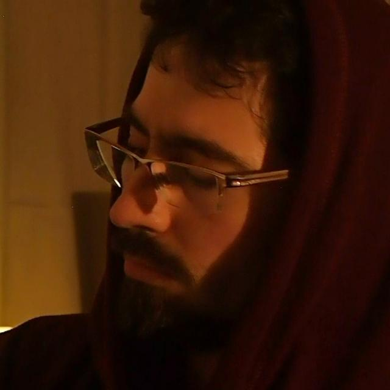
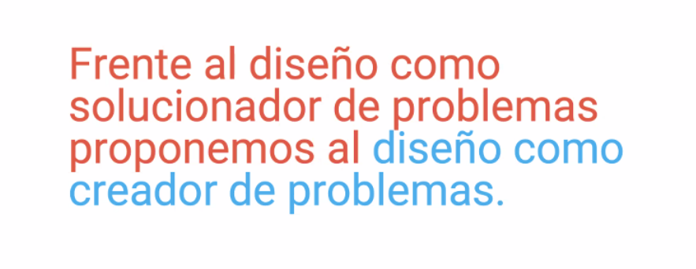
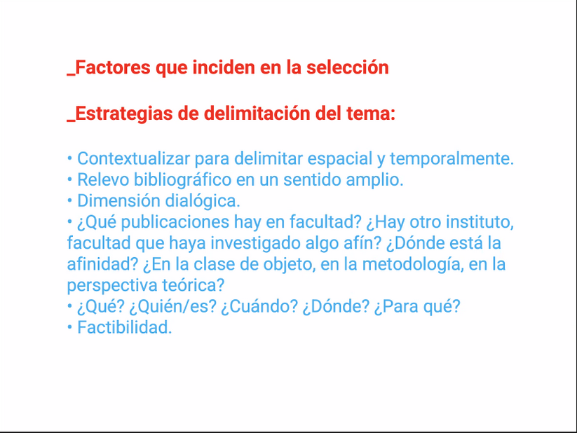
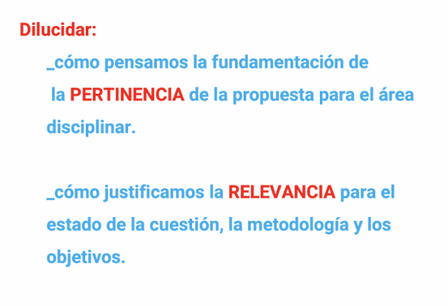
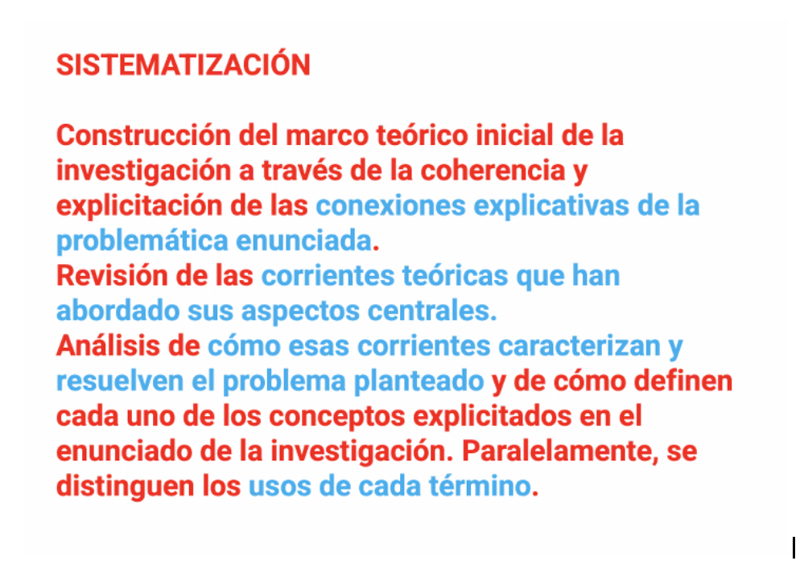
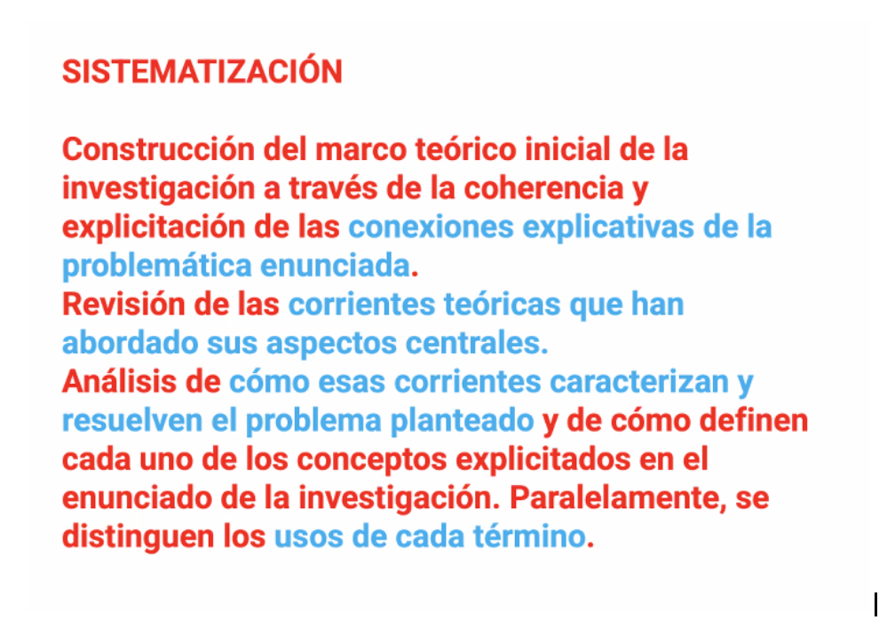

Bitácora del curso
Gonzalo Souto
gonzalosdesign@gmail.com
Apuntes de clase
transformar algo, pero transformarse a sí mismo estar abierto a poder refutar sus propias hipótesis
Libros
- Pioneers of modern Design. críticas a ciertas narraciones esencialistas
- Guy Julier. La cultura del diseño, señala la importancia de que el campo del diseño reflexione sobre sí mismo
Idea Inicial:
Investigar fenómenos relacionados con los videojuegos desde una perspectiva de comunicación y/o semiótica
Lecturas relacionadas
- Pérez Latorre, tesis de doctorado, semiotic approach
- Eco, guerrilla semiológica
- Hall, lectura negociada
- ~la audiencia del western no recibe violencia, recibe representaciones de violencia~
Incluir cita original de Hall - Citar frase de Pérez latorre sobre qué si los productos culturales nos construyen es importante estudiarlos
- “Si la forma en la que, desde niños, construimos universos de valores y damos sentido a nuestras vidas está indisolublemente unida a los medios y las obras de la cultura de masas, el estudio de los modos de significación del videojuego, y en especial del videojuego del mainstream comercial, requiere, hoy en día, un desarrollo en profundidad.” Pérez Latorre (2010, p.1).
- "Los videojuegos construyen argumentos sobre cómo funcionan los sistemas sociales o culturales en el mundo, o cómo pueden funcionar, o no; y, cuando se juegan se interpretan esos argumentos, al hacerlo, se aceptan y con ello, quedar persuadidos, pero también se pueden desafiar o simplemente rechazar (Bogost, 2008, p. 136)." Vásquez, E. M. R. (2022).
- Pornography in E rated videogames Paper Indonesio
- Violence in rated games
Pendiente:
- LudumProba: una propuesta para el rediseño lúdico de las instancias de examen en el contexto universitario. Anibal Rossi
- Huizinga
- Zimmerman
- Sicart
- Aarseth
Actividades paralelas
EFI
- Trabajo de campo, Etnografía, Observación participativa, talleres
Territorios digitales
- Paie - Pasantía de investigación
- Apoyo Ietu - Digic
- Tutor Perroni
- Ayudante Ezquerra
- Equipo: Galván, Moreira, Pévere
Ensayovideo
Apuntes de clase
- Pensar la investigación dentro del campo de la comunicación visual
- Aprovechar los saberes adquiridos en la carrera y los Consensos de la disciplina
- Idea hegeliana: El conocimiento es rodeo
- Lo que uno suponía acerca de algo se transforma a lo largo del proceso
Hipótesis
en los juegos está pasando algo parecido a lo que ha pasado con la comunicación mediática, se lo aborda desde una mirada efectista y no se entiende el rol activo
esa afirmación requiere una comprobación que no vale la pena, es un dato que no aporta mucha informaciónsi el modelo multidimensional de pérez latorre es correcto explica la supuesta disonancia ludonarrativa?
tbh solo conozco la disonancia ludonarrativa de youtube, debería leer el libro de Dayoscript
si el modelo multidimensional de Pérez Latorre es correcto hemos abordado mal conceptos como el ESRB
limitar el abordaje a la dimensión narrativa deja de lado elementos esenciales, un juego puede representar violencia en la dimensión narrativa, pero ser experimentado de forma colaborativa en la dimensión lúdica
Ej: Bloodborne (Mature) puede ser menos violento que Fall guys (Everyone)
esto tiene cierto contacto tangencial con las ideas de Dorfman y Mattelart, no tanto sobre un supuesto imperialismo, sino más bien sobre la posibilidad de deslizar ideas por debajo de una superficie supuestamente inocua e inocentemuy ambicioso, vayamos por algo más concreto
Objetivos
- Se recomienda hacer fichas bibliográficas durante la investigación
- Recomendaciones bibliográficas: Manual de Metodologías de la investigación en ciencias sociales (2011) cabrera y bartdyani
- El diseño de una investigación es diseñar procesos para responder las preguntas que surgen
- La tesis tiene que ver con los conocimientos adquiridos en la carrera
- Incorporar en la investigación las formas del diseño de generar conocimiento


Preguntas
- ¿En qué medida el modelo de Hall aplica para el caso de los videojuegos?
¿en qué medida la multidimensionalidad de la que habla Pérez Latorre se relaciona con el modelo de recepción de Hall?
se nos va del scope, queda para el dlc
¿Podemos observar el modelo de Hall en comunidades interpretativas locales? posibles entrevistas con gamers,
debería leer metodologías específicas
en el curso hay una unidad específica
Presentaciones tesistas
- Caos en el chat porque a minutos de comenzar la clase no había comunicación de si la clase era presencial o virtual
llegué tarde (desde casa)
2 chicas estaban presentando su tesis sobre la imagen como agente de resistencia en la dictadura
Higligths
- tener claro al tutor
- ir a las reuniones con preguntas concretas
- las defensas son individuales aunque la tesis sea en dupla
- la dupla ayuda a rebotar ideas, pero también a mantener el ánimo, empuje, etc
- tacto, respeto y sentido común para aproximarse a los entrevistados
-
Maca Y Pablo tesis
Higligths
- Tema: web y accesibilidad
- Calendario
- la relación pfc y tesis
- valorar los tiempos y entender que a veces el rédito es a largo plazo
- cuidado al involucrar relaciones en la tesis
- doc con apuntes para poder desarrollar las ideas
- EDIT: ver reseña completa
Presentaciones
- presentaciones de proyectos en 5 minutos. No nos tocó
- Creo que me hice una hernia inguinal
- no es lo mismo un tema que un problema de investigación
- animarse a transitar lugares que no son tan cómodos
- no ir a confirmar lo que ya se sabe
- en los objetivos se juega el aporte que va a realizar la investigación a la disciplina
Apuntes de Clase
a veces se subestima el scope y se trata de acotar a uruguay, pero eso aún es un campo muy muy amplio
¿Puedo hacer esto?
Si!
pero… ¿puedo hacer esto en 6 meses?
 un grupo de ldcv está trabajando en una tesis con un paleontólogo para estudiar las representaciones gráficas académicas de los dinosaurios
recuerdo haber pensado algo similar con astronomía
Tesis de Pablo Muñoz
 

Presentación
- Presenté la una ppt que comnina mi trabajo para el seminario de Territorios digitales con aportes del equipo, especialmente sobre interactividad
- Necesité 8 minutos para contarlo hablando lo más rápido que pude
- Corre riesgo de convertirse en comprobar lo que ya sabemos
Feedback
- que el modelo no recorte la comprensión del modelo
- el objetivo general tiene que dejar claro el aporte a la disciplina
- no ir a corroborar lo que ya sabemos (esto también lo hicieron las tesistas del diseño como vehículo de cambio social)
Tesis de grado
A investigar se aprende investigando
apuntes sobre la construcción de una tesis de grado
- el proceso mismo de redacción nos fuerza a encontrar argumentación y desarrollo
- en ese proceso aparecen nuevas preguntas para futuras investigaciones
- ¿Fundamentar por qué rodeamos el problema con estos autores y no otros?
- Plantear proyectos factibles, tener en cuenta limitaciones económicas, materiales y de todo tipo de recursos
- ¿leyeron los lineamientos de la tesis? you should
- "no necesariamente tiene que construir un problema, también hay lugar para tesis de “estado del arte”, etc." me lleva a pensar en la tesis de Stebniki & Tarallo
- si bien es muy difícil encontrar un tema completamente ignoto, a nivel regional y local todavía hay margen para abordar problemáticas de DCV
¿Cómo abordar a un docente para que sea tutor?
- mandar un mail describiendo en un par de párrafos el proyecto
- luego se envía un mail a comisión de carrera y continúa la formalización
- Incluir datos: título, tema, objetivos, índice, bibliografía, tutor, estudiante nota del tutor diciendo que le interesa compañar la tesis
- luego de que comisión acepta la tesis, tenes 4 meses para entregarla
- La tesis va en arial cuerpo 11 entre 25000 y 50000 caracteres
- registrar un mínimo de 3 intercambios: que aspectos relevantes se produjeron como avances en el problema investigado
- el tutor está en el tribunal, pero además el estudiante puede proponer dos docentes más para que integren el tribunal y luego el tribunal tiene 30 días para leerla
- ta tesis se puede hacer en dupla, pero la defensa es individual
- un posible formato de tesis es hablar sobre la propia experiencia en extensión, docencia, etc
Intercambio
- intercambio del tp5 con el grupo 23
-
comentarios de Monica:
uno puede cruzar distintos marcos teóricos, antes se era más purista, pero ahora es más mixto, lo importante es que haya fundamentos para las decisiones
en una tesis de grado no hace falta describir nuevas categorías, bla, no es una teoría, etc

DEADLINE: JUEVES 15/12
Feedback pre entregas
- los títulos no llevan tilde
- no corresponde poner titulos super descriptivos de las herramientas, etc que serán usadas
- tampoco corresponde poner títulos muy vagos o amplios
- al comentar la estrategia metodológica no alcanza con enumerar una lista de herramientas metodológicas genéricas que pueden servir para muchas investigaciones diferentes, hace falta describir porque serán utilizadas esas herramientas y no otras y cómo se articulan las mismas con el proyecto de investigación
- la primera vez que se menciona un autor hay que poner nombre y apellido
- cuando se ponen citas textuales hay que poner el numero de pagina
- cuidado con aseveraciones valorativas del tipo de “X es fundamental para TAL”, si es fundamental o no deberá demostrarlo la investigación, etc
- objetivo general: el aporte que vamos a hacer a la disciplina
- objetivos específicos: por orden de jerarquía, o por algún orden coherente,etc y deben desprenderse del objetivo general, no pueden estar disociados de él
- es SUPER IMPORTANTE incorporar las devoluciones de los tutores o evaluadores a la hora de presentar un proyecto de investigación

esta mañana presenté mi ponencia en las jornadas de investigación de Fic!
Feedback de la preentrega
- algunas de nuestras preguntas ya están respondidas en la bibliografía
- -los objetivos están bien formulados
- -habría que agregar algún objetivo específico más
- -habría que desambiguar algunas categorías
- preguntarse cómo haría para hacer una mirada desde el extrañamiento
- hay metodologías específicas para estudiar productos interactivos
- también hay bibliografía más nueva sobre el tema

Presentación final de curso
Accesos al informe final y al PDF de la presentación